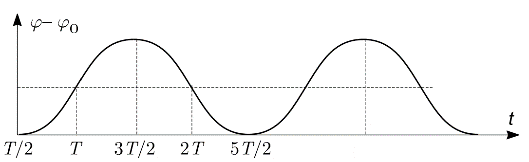

X18 (2018) — English translation
The moment equation for the rod about the hinge is: \[ I = M \ddot{\varphi},\]where $I=\frac{1}{3} ml^2$ is the moment of inertia of the rod about its end, and $M=mg \cdot \left(\frac{1}{2} l \sin \varphi \right) \simeq \frac{1}{2} mgl \varphi$ is the moment of gravity.
Let's check that $\varphi =Ae^{t/\tau}+Be^{-t/τ\tau}$ is a solution to the resulting equation: $\ddot{\varphi} = \frac{1}{\tau^2} \left(Ae^{t/\tau}+Be^{-t/τ\tau} \right) = \frac{\varphi (t)}{\tau^2}$.
The boy's reaction time $\tau_r$ must be of the order of the characteristic fall time $\tau$. Using this, we find the length of the stick: $l_r=\tau_r^2 \frac{3g}{2}$.
The bird's reaction time $\tau_b$ must be of the order of the characteristic fall time $\tau$ Using this, we find the bird's reaction time: $\tau_b=\sqrt{\frac{2 l_b}{3 g}}$.
The time $\tau_m$ during which the cyclist’s fulcrum can be moved depends on the base $d$ of the bicycle and its speed $v_m$ as follows $\tau_m=\frac{d}{v_m}$. This time must be on the order of the characteristic fall time $\tau$. Find the speed $v_m=d\sqrt{\frac{3g}{2L}}$.
In the process of changing the configuration, the tightrope walker is affected by the moment of gravity, however, this does not lead to a change in the angular momentum (changes in angles $\alpha_1$ and $\alpha_2$ occur at a very high speed over a short period of time). Let us write down the law of conservation of angular momentum relative to the support point \[m(1.4H)^2 \dot{\alpha}_1+mH^2\dot{\alpha}_2 = 0\], taking into account the fact that at the initial moment the tightrope walker is at rest. We integrate the resulting expression over time and obtain $1.96(\alpha_1-\alpha_0) + (\alpha_2 - \alpha_0) = 0$. We add the condition $\alpha_1 - \alpha_2=\beta$ to this equation and solve a system of two linear equations.
Moment of gravity $M=mg (1.4H) \alpha_1+mgH⋅\alpha_2$. Let's substitute here $\alpha_1$ and $\alpha_2$ from the previous paragraph and get \[ M=mgH(2.4 \alpha_0-\frac{7}{37} \beta_0 ) .\]In order for the tightrope walker to return to the previous position, he needs to reverse the speed gained, for this there must be $M<0$, i.e. $\beta_0>0$.
The motion of a straightened tightrope walker is described by the equation $2.96mH^2 \ddot{\alpha}_1=2.4mgH\alpha_1$. We look for its solution in the form $\alpha_1=Ae^{t/\tau}+Be^{-t/\tau}$. In order for the tightrope walker to return to the starting position, $A=0$. Therefore $\frac{\dot{\alpha}_1}{\alpha_1} = - \frac{1}{\tau}$.
As shown above, the speed of the tightrope walker immediately after straightening (after the second change of form) is $\dot{\alpha}_\text{to}=-\frac{\alpha}{\tau}$. The speed right before bending is equal to $\dot{\alpha}_\text{н}=\frac{\alpha_0}{\tau}$, since this process is equivalent, up to a change in the sign of time, to that described in the previous paragraph. Change in angular momentum in a bent configuration: \[\Delta L=2.96mH^2⋅(\alpha_\text{to}-\alpha_\text{н} )=-\frac{5.92mH^2 \alpha_0}{τ}\]Taking into account condition $\alpha_0 \ll \beta_0$, moment of force $M\simeq-\frac{7}{37} mgH\beta_0$. The change in angular momentum occurs due to the moment $M$ during the time $T_b=\frac{\Delta L}{M}$. From here we get the answer $T_b=28.18 \frac{\alpha_0}{\beta_0} \sqrt{\frac{H}{g}}$.
In the case where the acceleration is directed upward (for example, $0 < t < T$), the inertial force is directed downward. The equation of motion for this case is: \[ \ddot{\varphi}=\frac{2v_0}{lT} \varphi.\]Since the displacements from position $\varphi_0$ are small, we can assume that the motion is uniformly accelerated: $\ddot{\varphi}=\frac{2v_0}{lT} \varphi_0$. Taking into account the initial conditions $\dot{\varphi}\left(\frac{T}{2}\right)=0$, $\varphi\left( \frac{T}{2}\right)=\varphi_0$ we obtain dependence $\varphi(t) = \varphi_0 + \frac{v_0}{lT} \left( t- \frac{T}{2} \right)^2$. After $t=T$ the moment of force changes direction, and the movement is described by a similar law. The amplitude of the angle change is $\Delta \varphi=\frac{v_0 T}{4 l } \varphi_0$.

Let's calculate the average moment "head-on": \[ \langle M \rangle = \langle ml a \varphi \rangle = ml \langle a \cdot \left[ \left(\varphi -\langle \varphi \rangle \right) + \langle \varphi \rangle \right] \rangle = ml \langle a (\varphi - \langle \varphi \rangle ) \rangle + ml \langle \varphi \rangle \langle a \rangle = - mla_0 \langle |\varphi - \langle \varphi \rangle| \rangle + 0 \] Let's calculate the average deflection modulus: \[ \langle |\varphi(t) - \varphi| \rangle = \frac{2}{t} \int\limits_0^\frac{T}{2} \Delta \varphi\left( 1- \frac{4t^2}{T^2}\right) dt = \frac{2}{3} \Delta \varphi = \frac{v_0 T}{6 l} \varphi_0\]Then the expression for the average moment of force $\langle M \rangle =-\frac{mv_0^2}{3} \varphi_0$
Gravity does not affect the value of the average moment of inertia obtained earlier. A moment of gravity equal to $mgl \varphi_0$ is added. Then the equation of motion has the following form $l^2 \ddot{\varphi} = \left( gl - \frac{v_0^2}{3} \right) \varphi_0$. The vertical position will be stable when the right side is negative, that is, a restoring moment occurs.